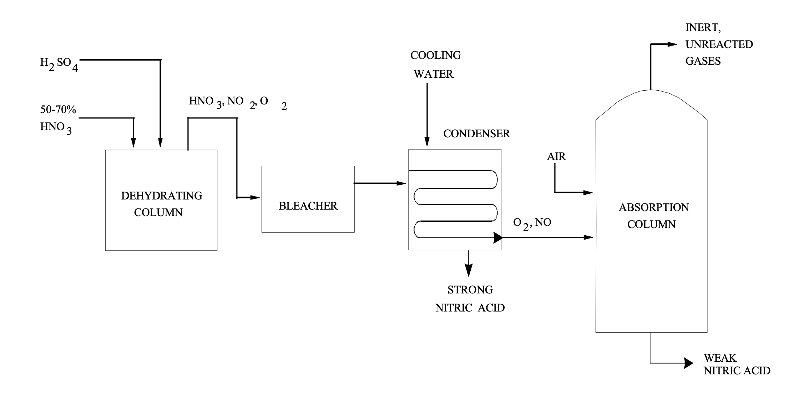

The Ostwald Process
This process converts ammonia (NH₃) into nitric acid through a series of controlled oxidation reactions.
How Does It Work?
The Ostwald Process involves three main stages:
Stage 1: Primary Oxidation
\[ 4NH_3(g) + 5O_2(g) \rightleftharpoons 4NO(g) + 6H_2O(g) \] Conditions: - Temperature: 600–800 °C - Pressure: 4–10 atmospheres - Catalyst: Platinum-rhodium gauze Result: Ammonia becomes nitric oxide (NO) and water vapor.
Stage 2: Secondary Oxidation
\[ 2NO(g) + O_2(g) \rightleftharpoons 2NO_2(g) \] Conditions: - Temperature: 50 °C Result: Nitric oxide (NO) is oxidized to nitrogen dioxide (NO₂).
Stage 3: Absorption
\[ 3NO_2(g) + H_2O(l) \rightleftharpoons 2HNO_3(aq) + NO(g) \] Result: Nitrogen dioxide (NO₂) forms dilute nitric acid (HNO₃).
Chemical Equations
The overall reaction for the Ostwald Process is:
\[ 4NH_3(g) + 5O_2(g) \rightleftharpoons 4NO(g) + 6H_2O(g) \]
\[ 2NO(g) + O_2(g) \rightleftharpoons 2NO_2(g) \]
\[ 3NO_2(g) + H_2O(l) \rightleftharpoons 2HNO_3(aq) + NO(g) \]
Conditions, Optimization and the Role of Equilibrium
Equilibrium helps to optimize and maximize the production of nitric acid in the following ways:
1. Temperature Control
Primary Oxidation: - Optimal temperature: 600–800 °C. - Higher temperatures favors the forward reaction, however heat degrades catalyst.
Secondary Oxidation: - Optimal temperature: 50 °C. - Lower temperatures favor the forward reaction, increasing the formation rate of NO2.
2. Pressure
Primary Oxidation: - Optimal pressure: 4–10 atmospheres. - Higher pressures shifts the reaction to form more of NO. - Lower pressures require less energy, but it decreases the rate of production of NO.
3. Catalyst
Platinum-Rhodium Gauze: - Composition: 90% platinum, 10% rhodium. - What it does: Catalyzes the reaction, increases the rate of ammonia oxidation. - Challenges: As it was mentioned, during high temperatures catalyst degradation happens.
4. Recycling
Nitric Oxide (NO): - The NO produced in the absorption stage is recycled back for the secondary oxidation. - This reduces the waste produced and optimizes the production process.
The Diagram of the Process

Fig. 1. Retrieved from https://chemicalengineeringworld.com/nitric-acid-manufacturing-process/
Fig. 2. Retrieved from https://www.epa.gov/sites/default/files/2020-09/documents/8.8_nitric_acid.pdf
Practice Questions
Question 1: What is the primary reactant in the Ostwald Process?
Question 2: What role does the platinum-rhodium catalyst play in the process?
Question 3: Why is nitric acid important in industrial applications?